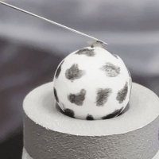

本课题组的主要研究主题，是以果蝇为主要模式生物，结合行为实验、神经机制分析与计算建模方法， 研究复杂环境中的感知、行为与决策机制，并进一步探索其在类脑智能与人工智能中的应用。
本課題組的主要研究主題，是以果蠅為主要模式生物，結合行為實驗、神經機制分析與計算建模方法， 研究複雜環境中的感知、行為與決策機制，並進一步探索其在類腦智能與人工智能中的應用。
Our research group focuses on using Drosophila melanogaster as the primary model organism, integrating behavioral experiments, neural mechanism analysis, and computational modeling approaches to investigate perception, behavior, and decision-making mechanisms in complex environments, and to further explore their applications in brain-inspired and artificial intelligence.
与一般单纯以行为观察或算法建模为主的研究相比，本课题组的研究有几个较突出的特点：
與一般單純以行為觀察或算法建模為主的研究相比，本課題組的研究有幾個較突出的特點：
Compared to studies that focus solely on behavioral observation or algorithmic modeling, our research has several distinctive features:
- 以果蝇为主要实验模型，结合经典行为学范式，系统研究空间认知、行为表型及其神经机制。
- 在行为分析中引入计算建模、机器学习与计算机视觉方法，对复杂行为进行自动化量化与机制解析。
- 在研究过程中，将行为实验结果与类脑计算问题相联系，希望从生物系统中提炼可用于智能系统设计的启发。
- 以果蠅為主要實驗模型，結合經典行為學範式，系統研究空間認知、行為表型及其神經機制。
- 在行為分析中引入計算建模、機器學習與計算機視覺方法，對複雜行為進行自動化量化與機制解析。
- 在研究過程中，將行為實驗結果與類腦計算問題相聯繫，希望從生物系統中提煉可用於智能系統設計的啟發。
- Using Drosophila melanogaster as the primary experimental model combined with classical behavioral paradigms to systematically study spatial cognition, behavioral phenotypes, and their neural mechanisms.
- Introducing computational modeling, machine learning, and computer vision methods into behavioral analysis for automated quantification and mechanistic interpretation of complex behaviors.
- Linking behavioral experimental results with brain-inspired computing questions, aiming to extract insights from biological systems that can inform the design of intelligent systems.
目前本课题组主要研究方向如下：
目前本課題組主要研究方向如下：
Our current research directions are as follows:
1. 空间认知与方向表征的类脑机制 1. 空間認知與方向表徵的類腦機制 1. Brain-inspired Mechanisms of Spatial Cognition and Directional Representation
动物在复杂环境中移动与导航时，需要持续获得并更新关于自身方向、空间位置和外界线索的信息。 果蝇虽然神经系统相对简单，但能够表现出稳定的朝向行为、视觉定位和空间记忆，是研究空间认知机制的重要模式生物。
動物在複雜環境中移動與導航時，需要持續獲得並更新關於自身方向、空間位置和外界線索的信息。 果蠅雖然神經系統相對簡單，但能夠表現出穩定的朝向行為、視覺定位和空間記憶，是研究空間認知機制的重要模式生物。
Animals moving and navigating in complex environments must continuously acquire and update information about heading direction, spatial position, and external cues. Although Drosophila melanogaster has a relatively compact nervous system, it exhibits stable orientation behavior, visual fixation, and spatial memory, making it an important model for studying spatial cognition.
本方向主要关注果蝇空间定向过程中的方向信息编码、维持与更新机制，重点研究方向稳定性、空间工作记忆和导航行为相关神经环路如何共同参与行为控制。 我们结合经典行为学范式、球形跑台记录、神经操控与计算建模，对果蝇朝向行为和空间记忆的动态过程进行分析，并进一步探索其对类脑导航和自主决策系统的启发。
本方向主要關注果蠅空間定向過程中的方向信息編碼、維持與更新機制，重點研究方向穩定性、空間工作記憶和導航行為相關神經環路如何共同參與行為控制。 我們結合經典行為學範式、球形跑台記錄、神經操控與計算建模，對果蠅朝向行為和空間記憶的動態過程進行分析，並進一步探索其對類腦導航和自主決策系統的啟發。
This direction focuses on how directional information is encoded, maintained, and updated during spatial orientation in Drosophila melanogaster, with emphasis on how circuits related to directional stability, spatial working memory, and navigation jointly contribute to behavioral control. By combining classical behavioral paradigms, fly-on-ball recording, neural manipulation, and computational modeling, we analyze the dynamics of orientation behavior and spatial memory, and explore their implications for brain-inspired navigation and autonomous decision-making systems.
已有研究表明，果蝇在空间定向过程中依赖稳定机制与更新机制之间的协调，以维持和调整方向记忆 （Han et al., 2024, Journal of Insect Physiology；Han et al., 2021, eNeuro）。 这些结果为理解生物体空间信息处理的神经基础及其类脑启发提供了重要依据。
已有研究表明，果蠅在空間定向過程中依賴穩定機制與更新機制之間的協調，以維持和調整方向記憶 （Han et al., 2024, Journal of Insect Physiology；Han et al., 2021, eNeuro）。 這些結果為理解生物體空間信息處理的神經基礎及其類腦啟發提供了重要依據。
Previous studies have demonstrated that Drosophila melanogaster relies on coordination between stabilization and updating mechanisms to maintain and adjust directional memory during spatial orientation (Han et al., 2024, Journal of Insect Physiology; Han et al., 2021, eNeuro). These findings provide important evidence for understanding the neural basis of spatial information processing and its brain-inspired implications.


2. 生物基本行为表型及其机制探索 2. 生物基本行為表型及其機制探索 2. Fundamental Biological Behavioral Phenotypes and Their Mechanistic Exploration
生物体在自然环境中会表现出多种基本行为表型，包括趋光、运动、交配、攻击、竞争和应激反应等。 这些行为既受到光照、气味、温度等外界环境刺激的影响，也受到发育经历、交配状态和内部生理状态的调控。
生物體在自然環境中會表現出多種基本行為表型，包括趨光、運動、交配、攻擊、競爭和應激反應等。 這些行為既受到光照、氣味、溫度等外界環境刺激的影響，也受到發育經歷、交配狀態和內部生理狀態的調控。
Organisms exhibit a variety of fundamental behavioral phenotypes, including phototaxis, locomotion, mating, aggression, competition, and stress-related responses. These behaviors are influenced by external stimuli such as light, odor, and temperature, as well as by developmental experience, mating status, and internal physiological state.
本方向以果蝇为主要模式生物，系统研究不同环境与生理条件下行为表型的变化规律。 我们通过构建多种行为实验范式，分析视觉刺激、光谱环境、温度条件和交配背景如何影响行为选择、运动能力、攻击与竞争行为，并进一步考察行为表型的可塑性及其对环境变化的适应过程。
本方向以果蠅為主要模式生物，系統研究不同環境與生理條件下行為表型的變化規律。 我們通過構建多種行為實驗範式，分析視覺刺激、光譜環境、溫度條件和交配背景如何影響行為選擇、運動能力、攻擊與競爭行為，並進一步考察行為表型的可塑性及其對環境變化的適應過程。
This direction uses Drosophila melanogaster as the primary model to examine how behavioral phenotypes vary across environmental and physiological conditions. By constructing behavioral paradigms under different visual, spectral, thermal, and mating-related contexts, we analyze how these factors shape behavioral choice, locomotor ability, aggression, and competition, and further examine behavioral plasticity and adaptation to environmental change.
已有研究表明，视觉刺激条件可显著影响果蝇的行为偏好与选择（Han et al., 2024, Journal of Insect Physiology）； 不同环境条件及生理状态会调节其运动能力与行为恢复过程（Han et al., 2026, Behavioural Processes）； 而光谱条件亦会对行为表现及相关认知特征产生系统性影响（Han et al., 2025, Journal of Experimental Zoology Part A）。 这些研究为理解果蝇基本行为表型的调控机制提供了实验依据。
已有研究表明，視覺刺激條件可顯著影響果蠅的行為偏好與選擇（Han et al., 2024, Journal of Insect Physiology）； 不同環境條件及生理狀態會調節其運動能力與行為恢復過程（Han et al., 2026, Behavioural Processes）； 而光譜條件亦會對行為表現及相關認知特徵產生系統性影響（Han et al., 2025, Journal of Experimental Zoology Part A）。 這些研究為理解果蠅基本行為表型的調控機制提供了實驗依據。
Previous studies have shown that visual stimulus conditions can significantly influence behavioral preferences and choices in Drosophila melanogaster (Han et al., 2024, Journal of Insect Physiology); environmental conditions and physiological state can modulate locomotor ability and behavioral recovery (Han et al., 2026, Behavioural Processes); and spectral conditions can systematically affect behavioral performance and related cognitive characteristics (Han et al., 2025, Journal of Experimental Zoology Part A). Together, these studies provide experimental evidence for understanding the regulatory mechanisms of fundamental behavioral phenotypes.

3. 面向类脑智能的深度学习与行为计算建模 3. 面向類腦智能的深度學習與行為計算建模 3. Deep Learning and Computational Behavioral Modeling for Brain-inspired Intelligence
随着行为实验数据规模不断增加，传统人工观察和简单统计方法已难以充分揭示复杂行为中的动态规律。 生物行为本身包含感知、信息整合、状态调控和决策输出等过程，为类脑计算与人工智能模型设计提供了重要启发。
隨著行為實驗數據規模不斷增加，傳統人工觀察和簡單統計方法已難以充分揭示複雜行為中的動態規律。 生物行為本身包含感知、信息整合、狀態調控和決策輸出等過程，為類腦計算與人工智能模型設計提供了重要啟發。
As behavioral datasets continue to grow, traditional manual observation and simple statistical approaches are no longer sufficient for revealing dynamic patterns in complex behavior. Biological behavior itself involves perception, information integration, state modulation, and decision output, providing important inspiration for brain-inspired computing and AI model design.
本方向致力于将深度学习、机器学习与计算机视觉方法应用于生物行为研究，构建从数据采集、特征提取到行为识别和决策建模的分析框架。 我们关注目标检测、关键点识别、轨迹分析、行为分类、多因素行为决策建模和模型可解释性等问题，希望在提高行为量化效率的同时，揭示影响行为选择的关键变量及其相对贡献。
本方向致力於將深度學習、機器學習與計算機視覺方法應用於生物行為研究，構建從數據採集、特徵提取到行為識別和決策建模的分析框架。 我們關注目標檢測、關鍵點識別、軌跡分析、行為分類、多因素行為決策建模和模型可解釋性等問題，希望在提高行為量化效率的同時，揭示影響行為選擇的關鍵變量及其相對貢獻。
This direction applies deep learning, machine learning, and computer vision methods to biological behavior research, building an analytical framework from data acquisition and feature extraction to behavior recognition and decision modeling. We focus on object detection, keypoint recognition, trajectory analysis, behavior classification, multi-factor decision modeling, and model interpretability, aiming to improve behavioral quantification while identifying key variables and their relative contributions to behavioral choices.
在具体研究中，我们结合卷积神经网络、目标检测模型（如 YOLO）及机器学习方法， 对果蝇行为轨迹（Han et al., 2025, Ethology）与姿态进行建模分析（Han et al., 2025, Behavioural Processes）， 并进一步探索行为模式与神经机制之间的对应关系。通过数据驱动与机制建模相结合的方式，希望从生物行为中提炼可用于类脑智能设计的启发。
在具體研究中，我們結合卷積神經網絡、目標檢測模型（如 YOLO）及機器學習方法， 對果蠅行為軌跡（Han et al., 2025, Ethology）與姿態進行建模分析（Han et al., 2025, Behavioural Processes）， 並進一步探索行為模式與神經機制之間的對應關係。通過數據驅動與機制建模相結合的方式，希望從生物行為中提煉可用於類腦智能設計的啟發。
In our specific research, we combine convolutional neural networks, object detection models such as YOLO, and machine learning methods to model and analyze behavioral trajectories (Han et al., 2025, Ethology) and postures (Han et al., 2025, Behavioural Processes) in Drosophila melanogaster. We further explore the correspondence between behavioral patterns and neural mechanisms, using a combination of data-driven and mechanistic modeling to extract insights relevant to brain-inspired intelligence design.

4. 多模式生物行为侦测系统开发 4. 多模式生物行為偵測系統開發 4. Development of Multi-species Behavioral Detection Systems
除了围绕果蝇开展行为实验与机制研究外，本课题组也开发面向多种模式生物的自动化行为侦测系统。 这些系统服务于果蝇、线虫、小鼠和斑马鱼等实验对象，结合视频采集、目标检测、个体追踪、关键点识别和行为分类等方法，实现对动物行为过程的自动化记录与定量分析。
除了圍繞果蠅開展行為實驗與機制研究外，本課題組也開發面向多種模式生物的自動化行為偵測系統。 這些系統服務於果蠅、線蟲、小鼠和斑馬魚等實驗對象，結合視頻採集、目標檢測、個體追蹤、關鍵點識別和行為分類等方法，實現對動物行為過程的自動化記錄與定量分析。
In addition to behavioral experiments and mechanistic studies in Drosophila, our group develops automated behavioral detection systems for multiple model organisms. These systems are designed for fruit flies, Caenorhabditis elegans, mice, and zebrafish, integrating video acquisition, object detection, individual tracking, keypoint recognition, and behavior classification to enable automated recording and quantitative analysis of animal behavior.
目前相关系统可用于记录和分析运动行为、攻击行为、交配行为及其他社会互动行为，并可根据不同实验场景扩展至多目标追踪、行为事件识别、轨迹参数提取和实时结果展示。 通过将行为学实验需求与人工智能算法开发相结合，我们希望建立更高效、可重复、可扩展的行为数据分析平台，为基础神经科学研究、动物行为学研究以及跨学科教学实践提供技术支撑。
目前相關系統可用於記錄和分析運動行為、攻擊行為、交配行為及其他社會互動行為，並可根據不同實驗場景擴展至多目標追蹤、行為事件識別、軌跡參數提取和實時結果展示。 通過將行為學實驗需求與人工智能算法開發相結合，我們希望建立更高效、可重複、可擴展的行為數據分析平台，為基礎神經科學研究、動物行為學研究以及跨學科教學實踐提供技術支撐。
The current systems can record and analyze locomotion, aggression, mating behavior, and other forms of social interaction, and can be extended to multi-object tracking, behavioral event recognition, trajectory-parameter extraction, and real-time visualization under different experimental settings. By integrating behavioral research needs with artificial-intelligence algorithm development, we aim to build efficient, reproducible, and scalable platforms for behavioral data analysis, supporting basic neuroscience, animal behavior research, and interdisciplinary teaching practice.